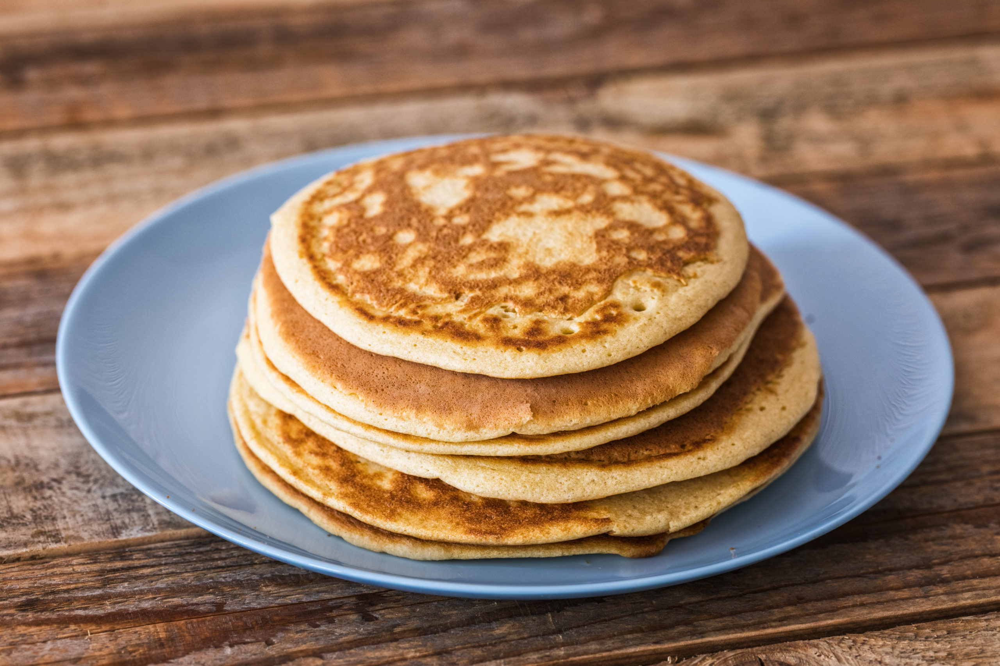

soola
30g võid
Kuumus maksi, pannile võid, et kogu pann oleks kaetud.
Munad pannile ja segada puust lusikaga kuni tahke. Umbes 3min
Lisada praadimise ajal soola
Serveerida soojalt.
Hind: 1 euro | Portsjonid: 2 | Hind portsjoni kohta: 0.5eur | Valmistusaeg: 5min
Koostisosad:
4 munasoola
30g võid
Valmistamise juhised:
Viska munad kaussi puruks ja eemalda koored.Kuumus maksi, pannile võid, et kogu pann oleks kaetud.
Munad pannile ja segada puust lusikaga kuni tahke. Umbes 3min
Lisada praadimise ajal soola
Serveerida soojalt.